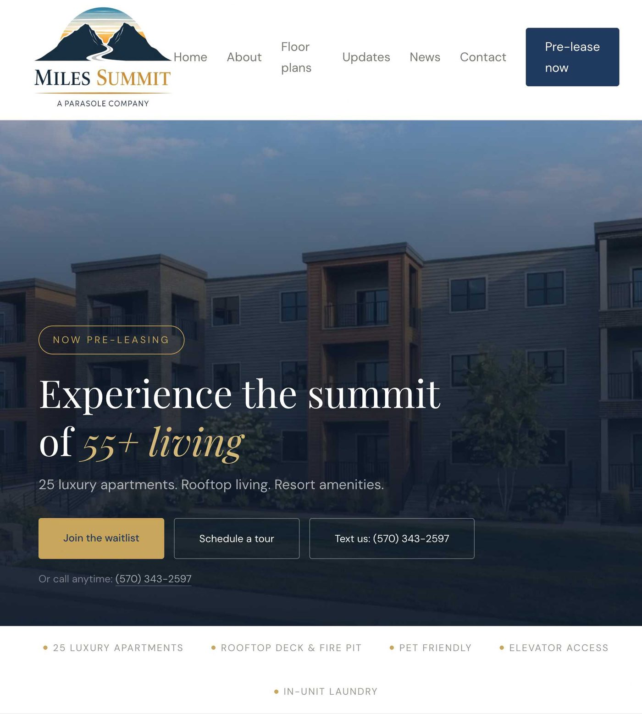
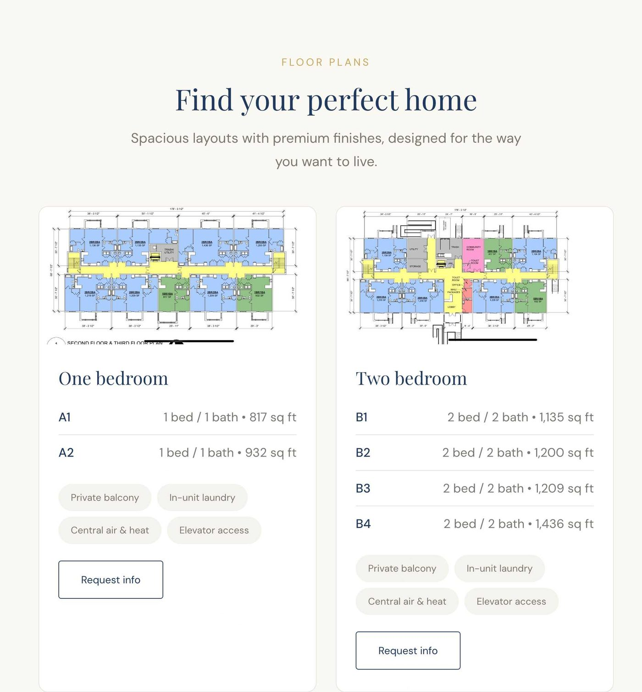
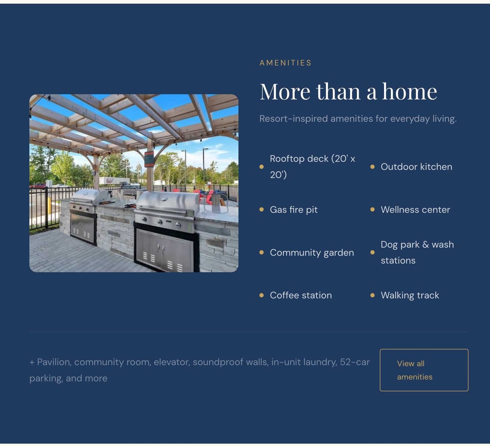
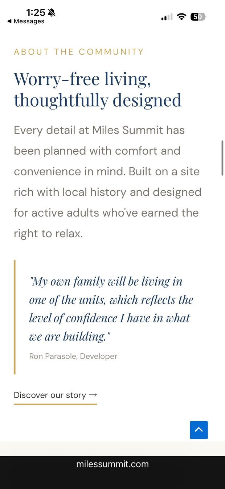
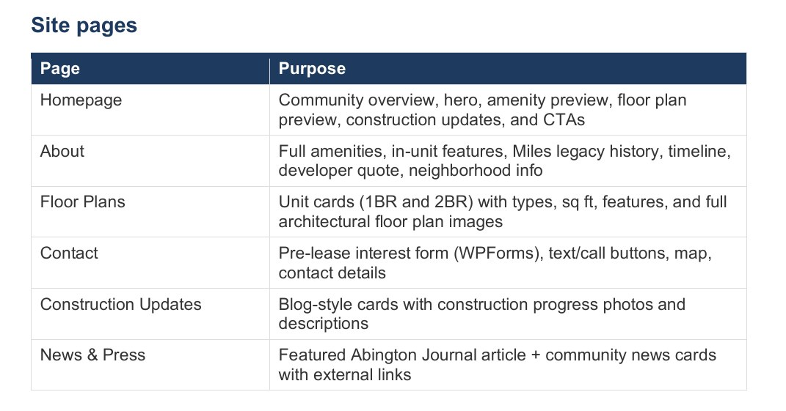

Case study
Miles Summit
A website for a 55+ apartment community that hadn't been built yet.
- Client
- Miles Summit, a Parasole company
- Scope
- Six-page website, designed and built
- Launched
- April 2026, a day ahead of schedule
- Live at
- milessummit.com
The problem
Miles Summit is a 25-unit community for residents 55 and over, in Clarks Summit, Pennsylvania. When the project started, it was a construction site. No model unit, no leasing office, nothing to walk through.
That is harder than it sounds. Almost everything that makes someone confident enough to sign a lease normally happens in person.
For four and a half months, the website was the only way to see Miles Summit.
It went live in late April, ahead of the building. Everything an interested buyer could learn, they learned here first.
Four decisions, and why
Every choice on the site answers the same question: how does someone get confident about a place they cannot visit?
Floor plans do the work a tour would
Not pretty sketches. The real architect's drawings, with every apartment labeled, its actual square footage, and what comes with it. Someone can pick the apartment they want, instead of just deciding they like the building.
Three ways to get in touch, before you scroll
Join the waitlist, schedule a tour, or send a text. People get in touch the way they are already comfortable. Making someone hunt for the one option the site prefers loses you inquiries.
Readable first, decorative second
Text a size up from the usual, and a soft shade behind anything written over a photo, so the headline never has to compete with the sky behind it. The people reading this are 55 and over and mostly on a phone. Looking good on a big designer monitor is not the test.
Built so they would not need me
Built with the same common tools thousands of other sites run on, plus a written guide to the whole thing. Nothing homemade that only I would understand. A site you can only change by calling the person who made it is not really yours.
What's on the site
Six pages: home, about, floor plans, construction updates, news and press, and contact. Built on WordPress so the team could keep it current without me.

- 1“Now pre-leasing” Answers the first question anyone has about an unfinished building: am I too early, or too late?
- 2What it is, in six words You know whether this place is for you before you scroll once.
- 3Three ways to reach out A waitlist form, a tour booking, and a text. Nobody is forced into the one the site prefers.
- 4The questions people call to ask Rooftop, pets, elevator, in-unit laundry. Answered before anyone picks up the phone.

- 1The architect's actual drawing Not a sketch. You can see where the kitchen sits relative to the balcony.
- 2Real square footage, apartment by apartment 817 to 1,436 square feet. Enough to work out whether your furniture fits.
- 3What comes with it Balcony, laundry, heat and air, elevator. Nobody has to call to find out.
- 4One button per layout The ask sits where the interest is, not on a contact page two clicks away.


Built with tools any web developer already knows:
The schedule
- March 24Contract signed. Sitemap and design direction first.
- April 29Site live, a day ahead of the contracted date. Five weeks of build.
- May 11Guide delivered, plus 30 days of support.
The handoff
Handing over a site that nobody on the team can update is not finishing the job. Miles Summit came with a written guide: every page, where each piece of text lives, how the inquiry form works, and who hosts what.
Any WordPress developer can pick this up tomorrow. That is the point.

From the client
“We needed a website that would give our 55+ community a credible presence for leasing inquiries before construction was even finished, and Marina delivered beautifully. She understood the real estate side, handled the entire project end to end, and was responsive and easy to work with the whole way through. The result is polished, professional, and exactly the first impression we wanted to make.”
Have something that isn't built yet?
Building something people cannot see yet is the problem I know best.